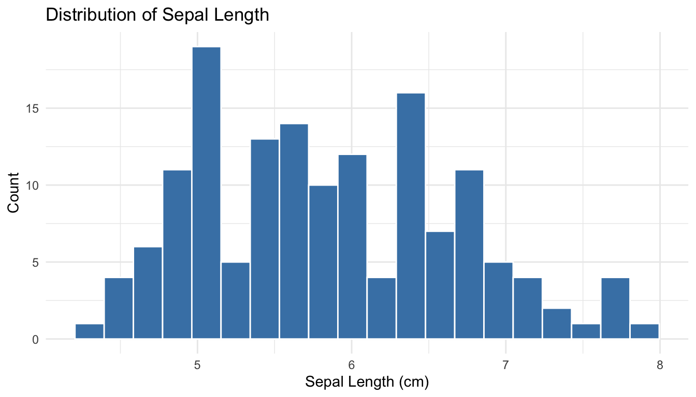
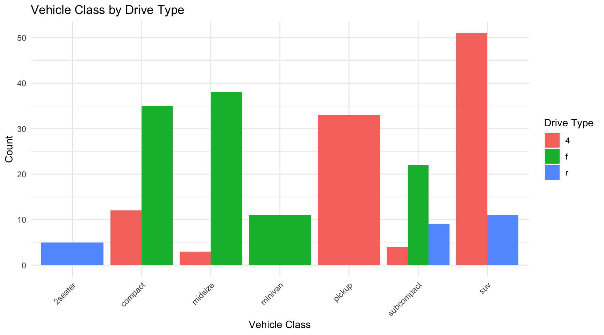
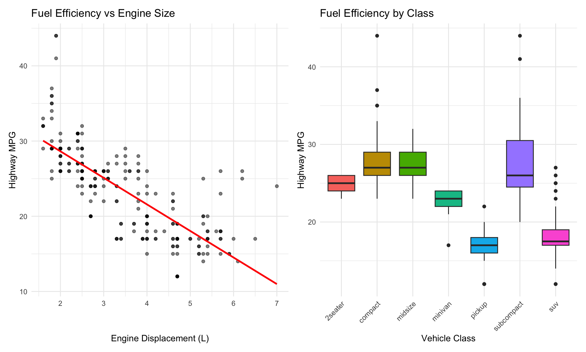

Exploratory Data Analysis (EDA) is the critical first step in any data analysis project. Before running statistical tests, fitting models, or drawing conclusions, you need to understand your data intimately. EDA is the practice of using visualization and summary statistics to explore datasets, uncover patterns, detect anomalies, test assumptions, and formulate hypotheses.
The term “Exploratory Data Analysis” was popularized by John Tukey in his groundbreaking 1977 book (Tukey 1977). Tukey emphasized that EDA is fundamentally different from confirmatory data analysis. While confirmatory analysis tests specific hypotheses with formal statistical procedures, exploratory analysis is open-ended, creative, and iterative. It is detective work—you are looking for clues about what your data can tell you.
Tukey’s Philosophy
“Exploratory data analysis is detective work—numerical detective work—or counting detective work—or graphical detective work… The most important maxim for data analysis is: ‘Far better an approximate answer to the right question, which is often vague, than an exact answer to the wrong question, which can always be made precise.’” — John Tukey
Figure 9.1: John Tukey (1915–2000), the father of Exploratory Data Analysis. Tukey invented the boxplot, coined the terms “bit” and “software,” and fundamentally shaped how statisticians think about data exploration versus confirmation.
EDA serves several critical purposes:
Understanding data structure: What variables do you have? What types are they? How are they organized?
Detecting errors and anomalies: Are there implausible values, outliers, or data entry mistakes?
Checking assumptions: Do the data meet the assumptions required for planned statistical tests?
Identifying patterns and relationships: What trends, correlations, or groupings exist in the data?
Generating hypotheses: What questions might these data answer? What further analyses are warranted?
EDA is not a one-time activity. You will return to exploratory analysis repeatedly throughout a project as you clean data, fit models, and interpret results. Each stage reveals new questions that send you back to explore further.
9.2 The EDA Mindset
Effective exploratory analysis requires a particular mindset. Be curious but skeptical. Look for patterns but question them. Be systematic but flexible. Most importantly, resist the urge to jump immediately to statistical testing.
Start broad, then narrow. Begin with the big picture—what is the overall structure of your data? How many observations and variables? What are the basic distributions? Then zoom in on interesting features, unusual patterns, or potential problems.
Use multiple approaches. Never rely on a single summary statistic or plot type. Look at your data from many angles. A histogram might suggest normality that a Q-Q plot reveals as questionable. A correlation coefficient might suggest no relationship that a scatterplot shows is actually nonlinear.
Document your exploration. Keep notes about what you find, questions that arise, and decisions you make. This documentation serves both as a record for yourself and as the foundation for your eventual analysis narrative.
Trust your visual system. Humans are extraordinarily good at pattern detection. A well-designed plot can reveal relationships that summary statistics obscure. Anscombe’s Quartet demonstrated this dramatically—four datasets with identical means, variances, and correlations but completely different underlying patterns visible only through visualization (Figure 22.4).
Figure 9.2: Anscombe’s Quartet: four datasets with nearly identical summary statistics (same means, variances, correlations, and regression lines) but strikingly different patterns when visualized. This classic example demonstrates why visualization is essential—summary statistics alone can be profoundly misleading.
9.3 Understanding Your Data
The first step in any EDA is to understand the basic structure of your dataset. R provides several functions for getting an overview of your data.
Basic Data Inspection
The str() function shows the structure of an object:
Code
# Load example datasetdata(iris)# View structurestr(iris)
This reveals that iris has 150 observations of 5 variables: four numeric measurements and one factor. The glimpse() function from dplyr provides similar information in a more compact format:
The summary() function provides basic statistics for each variable:
Code
summary(iris)
Sepal.Length Sepal.Width Petal.Length Petal.Width
Min. :4.300 Min. :2.000 Min. :1.000 Min. :0.100
1st Qu.:5.100 1st Qu.:2.800 1st Qu.:1.600 1st Qu.:0.300
Median :5.800 Median :3.000 Median :4.350 Median :1.300
Mean :5.843 Mean :3.057 Mean :3.758 Mean :1.199
3rd Qu.:6.400 3rd Qu.:3.300 3rd Qu.:5.100 3rd Qu.:1.800
Max. :7.900 Max. :4.400 Max. :6.900 Max. :2.500
Species
setosa :50
versicolor:50
virginica :50
For numeric variables, summary() returns the minimum, first quartile, median, mean, third quartile, and maximum. For factors, it shows counts for each level.
Sepal.Length Sepal.Width Petal.Length Petal.Width Species
"numeric" "numeric" "numeric" "numeric" "factor"
Identifying Missing Values
Missing data is common and can profoundly affect your analysis. Check for missing values systematically:
Code
# Check for any missing valuesany(is.na(iris))
[1] FALSE
Code
# Count missing values per columncolSums(is.na(iris))
Sepal.Length Sepal.Width Petal.Length Petal.Width Species
0 0 0 0 0
Code
# Visualize missing data pattern (using a dataset with missing values)# Create example data with missing valuesiris_missing <- irisiris_missing[sample(1:150, 10), "Sepal.Length"] <-NAiris_missing[sample(1:150, 5), "Petal.Width"] <-NA# Summary of missing valuescolSums(is.na(iris_missing))
Sepal.Length Sepal.Width Petal.Length Petal.Width Species
10 0 0 5 0
Missing Data Patterns
When you find missing values, ask: Are they missing completely at random (MCAR), missing at random (MAR), or missing not at random (MNAR)? The pattern of missingness affects how you should handle it. Never blindly delete rows with missing data without understanding why values are missing.
9.4 Univariate Analysis
After understanding the basic structure, examine each variable individually. Univariate analysis reveals the distribution, central tendency, spread, and anomalies in single variables.
Distributions of Continuous Variables
For continuous variables, visualize the distribution using histograms, density plots, and boxplots.
Histograms show the frequency of values in bins:
Code
ggplot(iris, aes(x = Sepal.Length)) +geom_histogram(bins =20, fill ="steelblue", color ="white") +labs(x ="Sepal Length (cm)",y ="Count",title ="Distribution of Sepal Length") +theme_minimal()

Figure 9.3: Histogram of sepal length showing the distribution of values across bins
Density plots provide a smooth estimate of the distribution:
# Summary statistics for all numeric variablesiris |>select(where(is.numeric)) |>summary()
Sepal.Length Sepal.Width Petal.Length Petal.Width
Min. :4.300 Min. :2.000 Min. :1.000 Min. :0.100
1st Qu.:5.100 1st Qu.:2.800 1st Qu.:1.600 1st Qu.:0.300
Median :5.800 Median :3.000 Median :4.350 Median :1.300
Mean :5.843 Mean :3.057 Mean :3.758 Mean :1.199
3rd Qu.:6.400 3rd Qu.:3.300 3rd Qu.:5.100 3rd Qu.:1.800
Max. :7.900 Max. :4.400 Max. :6.900 Max. :2.500
You can also calculate summary statistics by group:
After understanding individual variables, explore relationships between pairs of variables. The appropriate visualization depends on the types of variables being compared.
Continuous vs Continuous
For two continuous variables, scatterplots are the primary tool:
Code
ggplot(iris, aes(x = Sepal.Length, y = Sepal.Width)) +geom_point(alpha =0.6, size =2) +geom_smooth(method ="lm", se =TRUE, color ="red") +labs(x ="Sepal Length (cm)",y ="Sepal Width (cm)",title ="Relationship Between Sepal Dimensions") +theme_minimal()
Figure 9.8: Scatterplot showing the positive relationship between sepal length and width
Add color to reveal group patterns:
Code
ggplot(iris, aes(x = Sepal.Length, y = Sepal.Width, color = Species)) +geom_point(alpha =0.7, size =2.5) +labs(x ="Sepal Length (cm)",y ="Sepal Width (cm)",title ="Sepal Dimensions by Species") +theme_minimal()
Figure 9.9: Scatterplot colored by species revealing distinct clusters in the data
Calculate correlation coefficients to quantify linear relationships:
Correlation measures the strength of linear association between variables, but it does not imply causation. Two variables may be correlated because one causes the other, because both are caused by a third variable, or purely by chance. Always examine scatterplots—correlation coefficients can be misleading for nonlinear relationships.
Create a correlation plot matrix to view all pairwise relationships:
Code
# Using GGally package for pairs plotif (!require(GGally)) install.packages("GGally")library(GGally)ggpairs(iris,columns =1:4,aes(color = Species, alpha =0.5),upper =list(continuous ="cor"),lower =list(continuous ="points")) +theme_minimal()
Figure 9.10: Pairs plot showing all pairwise relationships among iris measurements
Continuous vs Categorical
For a continuous variable across categorical groups, use boxplots or violin plots:
Code
ggplot(iris, aes(x = Species, y = Sepal.Length, fill = Species)) +geom_boxplot(alpha =0.7, show.legend =FALSE) +labs(x ="Species",y ="Sepal Length (cm)",title ="Sepal Length by Species") +theme_minimal()
Figure 9.11: Boxplots comparing sepal length distributions across the three iris species
Violin plots combine density plots and boxplots to show the full distribution:
Code
ggplot(iris, aes(x = Species, y = Sepal.Length, fill = Species)) +geom_violin(alpha =0.7, show.legend =FALSE) +geom_boxplot(width =0.2, alpha =0.5, show.legend =FALSE) +labs(x ="Species",y ="Sepal Length (cm)",title ="Sepal Length Distribution by Species") +theme_minimal()
Figure 9.12: Violin plots showing the full distribution of sepal length for each species
You can also use overlapping density plots:
Code
ggplot(iris, aes(x = Sepal.Length, fill = Species)) +geom_density(alpha =0.5) +labs(x ="Sepal Length (cm)",y ="Density",title ="Sepal Length Distribution by Species") +theme_minimal()
Figure 9.13: Overlapping density plots comparing sepal length distributions across species
Categorical vs Categorical
For two categorical variables, use contingency tables and mosaic plots.
Code
# Create example categorical data using mpg datasetdata(mpg)# Contingency tabletable(mpg$class, mpg$drv)
ggplot(mpg, aes(x = class, fill = drv)) +geom_bar(position ="dodge") +labs(x ="Vehicle Class",y ="Count",fill ="Drive Type",title ="Vehicle Class by Drive Type") +theme_minimal() +theme(axis.text.x =element_text(angle =45, hjust =1))

Figure 9.14: Grouped bar chart showing the relationship between vehicle class and drive type
Mosaic plots show the relative proportions:
Code
if (!require(ggmosaic)) install.packages("ggmosaic")
Error in `contrib.url()`:
! trying to use CRAN without setting a mirror
Code
library(ggmosaic)
Error in `library()`:
! there is no package called 'ggmosaic'
Code
ggplot(mpg) +geom_mosaic(aes(x =product(drv, class), fill = drv)) +labs(x ="Vehicle Class",y ="Drive Type",title ="Mosaic Plot: Class vs Drive Type") +theme_minimal()
Error in `geom_mosaic()`:
! could not find function "geom_mosaic"
9.6 Detecting Outliers and Anomalies
Outliers are observations that differ markedly from other observations in the dataset. They may represent errors, rare but valid extreme values, or the most interesting part of your data. Never automatically delete outliers—investigate them.
Visual Detection
Boxplots automatically flag potential outliers (values beyond 1.5 × IQR from the quartiles):
Does this observation belong to a different population?
How does removing or keeping this value affect your conclusions?
Document your decisions about outlier handling.
Robust Alternatives to Mean and Standard Deviation
When outliers are present, the mean and standard deviation can be heavily influenced by extreme values. Robust statistics provide alternatives that are less sensitive to outliers.
Median vs Mean: The median is the value that splits the data in half—50% above, 50% below. Unlike the mean, the median is unaffected by extreme values.
MAD vs Standard Deviation: The Median Absolute Deviation (MAD) is a robust measure of spread. It is calculated as the median of the absolute deviations from the median:
# Compare robust and non-robust statistics# Create data with an outliernormal_data <-c(rnorm(99, mean =50, sd =5), 200) # One extreme outlier# Non-robust statisticscat("Mean:", round(mean(normal_data), 2), "\n")
# IQR is also robustcat("IQR:", round(IQR(normal_data), 2), "\n")
IQR: 6.06
The MAD and IQR give sensible estimates of spread that are not inflated by the single outlier.
Tukey’s Fences
The boxplot outlier rule (1.5 × IQR from the quartiles) is known as Tukey’s fences. Values outside the inner fences (1.5 × IQR) are considered potential outliers, while values outside the outer fences (3 × IQR) are considered extreme outliers. This rule is robust because it is based on quartiles rather than the mean and standard deviation.
4. Bivariate and multivariate analysis - Explore relationships between variables - Create scatterplots, correlation matrices, and grouped comparisons - Look for patterns, clusters, and anomalies
5. Identify and investigate anomalies - Detect outliers using visual and statistical methods - Investigate unusual patterns - Document decisions about data handling
6. Formulate questions and hypotheses - Based on patterns observed, what questions arise? - What hypotheses warrant testing? - What further analyses are needed?
7. Document findings - Summarize key characteristics of the data - Note data quality issues and how you addressed them - Record interesting patterns and potential analyses
displ year cyl cty hwy
Min. :1.600 Min. :1999 Min. :4.000 Min. : 9.00 Min. :12.00
1st Qu.:2.400 1st Qu.:1999 1st Qu.:4.000 1st Qu.:14.00 1st Qu.:18.00
Median :3.300 Median :2004 Median :6.000 Median :17.00 Median :24.00
Mean :3.472 Mean :2004 Mean :5.889 Mean :16.86 Mean :23.44
3rd Qu.:4.600 3rd Qu.:2008 3rd Qu.:8.000 3rd Qu.:19.00 3rd Qu.:27.00
Max. :7.000 Max. :2008 Max. :8.000 Max. :35.00 Max. :44.00
Code
# 4. Bivariate analysis
Code
p1 <-ggplot(mpg, aes(x = displ, y = hwy)) +geom_point(alpha =0.5) +geom_smooth(method ="lm", se =FALSE, color ="red") +labs(x ="Engine Displacement (L)",y ="Highway MPG",title ="Fuel Efficiency vs Engine Size") +theme_minimal()p2 <-ggplot(mpg, aes(x = class, y = hwy, fill = class)) +geom_boxplot(show.legend =FALSE) +labs(x ="Vehicle Class",y ="Highway MPG",title ="Fuel Efficiency by Class") +theme_minimal() +theme(axis.text.x =element_text(angle =45, hjust =1))p1 + p2

Figure 9.17: Exploratory analysis of fuel efficiency showing relationships with engine displacement and vehicle class
Load the mtcars dataset and perform a basic inspection:
View the structure using str() and glimpse()
Calculate basic dimensions (rows, columns)
Identify variable types
Check for missing values
Code
# Your code heredata(mtcars)
Exercise E.2: Univariate Analysis
Using the mtcars dataset:
Create a histogram of mpg with an appropriate number of bins
Create a density plot of hp (horsepower)
Create a boxplot of wt (weight)
Calculate summary statistics (mean, median, SD, IQR) for mpg
Code
# Your code here
Exercise E.3: Grouped Comparisons
Compare mpg across different numbers of cylinders (cyl):
Convert cyl to a factor
Create side-by-side boxplots
Create overlapping density plots
Calculate summary statistics by group
Code
# Your code here
Exercise E.4: Bivariate Relationships
Explore the relationship between wt (weight) and mpg:
Create a scatterplot
Add a regression line
Calculate the correlation coefficient
Color points by cyl to see if the relationship varies by cylinder count
Code
# Your code here
Exercise E.5: Outlier Detection
Identify potential outliers in the mtcars dataset:
Create a boxplot of hp to visually identify outliers
Use the IQR method to identify outliers in hp
Use z-scores to identify multivariate outliers in mpg and wt
Create a scatterplot highlighting identified outliers
Code
# Your code here
Exercise E.6: Comprehensive EDA
Perform a complete EDA on the diamonds dataset (from ggplot2):
Load the data and inspect its structure
Check for missing values and duplicates
Examine the distribution of price
Compare price across different cut categories
Explore the relationship between carat and price
Identify any unusual patterns or outliers
Write a brief summary of your findings
Code
# Your code heredata(diamonds)
EDA Never Ends
Remember that EDA is iterative. Each discovery leads to new questions. Each visualization suggests another perspective. The goal is not to exhaustively analyze every possible relationship but to develop a deep understanding of your data that guides subsequent analysis and interpretation.
9.10 Summary
Exploratory Data Analysis is the foundation of sound statistical practice. Before testing hypotheses or fitting models, you must understand your data through systematic exploration. This chapter covered:
The EDA mindset: Curiosity, skepticism, and systematic exploration
Data structure: Using str(), glimpse(), and summary() to understand your data
Univariate analysis: Examining distributions through histograms, density plots, boxplots, and summary statistics
Bivariate analysis: Exploring relationships using scatterplots, grouped comparisons, and correlation
Outlier detection: Visual and statistical methods for identifying anomalies
Data quality: Checking for missing values, duplicates, and inconsistencies
EDA workflow: A systematic approach to exploratory analysis
The techniques in this chapter will serve you in every data analysis project. Make EDA a habit—your statistical conclusions will be more reliable, your interpretations more nuanced, and your communication more convincing when they are grounded in thorough exploratory analysis.
Tukey, John W. 1977. Exploratory Data Analysis. Reading, MA: Addison-Wesley.
Source Code
# Exploratory Data Analysis {#sec-eda}```{r}#| echo: false#| message: falselibrary(tidyverse)library(patchwork)theme_set(theme_minimal())```## Introduction to EDAExploratory Data Analysis (EDA) is the critical first step in any data analysis project. Before running statistical tests, fitting models, or drawing conclusions, you need to understand your data intimately. EDA is the practice of using visualization and summary statistics to explore datasets, uncover patterns, detect anomalies, test assumptions, and formulate hypotheses.The term "Exploratory Data Analysis" was popularized by John Tukey in his groundbreaking 1977 book [@tukey1977exploratory]. Tukey emphasized that EDA is fundamentally different from confirmatory data analysis. While confirmatory analysis tests specific hypotheses with formal statistical procedures, exploratory analysis is open-ended, creative, and iterative. It is detective work—you are looking for clues about what your data can tell you.::: {.callout-note}## Tukey's Philosophy"Exploratory data analysis is detective work—numerical detective work—or counting detective work—or graphical detective work... The most important maxim for data analysis is: 'Far better an approximate answer to the right question, which is often vague, than an exact answer to the wrong question, which can always be made precise.'" — John Tukey:::{#fig-john-tukey fig-align="center" width="50%"}EDA serves several critical purposes:- **Understanding data structure**: What variables do you have? What types are they? How are they organized?- **Detecting errors and anomalies**: Are there implausible values, outliers, or data entry mistakes?- **Checking assumptions**: Do the data meet the assumptions required for planned statistical tests?- **Identifying patterns and relationships**: What trends, correlations, or groupings exist in the data?- **Generating hypotheses**: What questions might these data answer? What further analyses are warranted?EDA is not a one-time activity. You will return to exploratory analysis repeatedly throughout a project as you clean data, fit models, and interpret results. Each stage reveals new questions that send you back to explore further.## The EDA MindsetEffective exploratory analysis requires a particular mindset. Be curious but skeptical. Look for patterns but question them. Be systematic but flexible. Most importantly, resist the urge to jump immediately to statistical testing.**Start broad, then narrow**. Begin with the big picture—what is the overall structure of your data? How many observations and variables? What are the basic distributions? Then zoom in on interesting features, unusual patterns, or potential problems.**Use multiple approaches**. Never rely on a single summary statistic or plot type. Look at your data from many angles. A histogram might suggest normality that a Q-Q plot reveals as questionable. A correlation coefficient might suggest no relationship that a scatterplot shows is actually nonlinear.**Document your exploration**. Keep notes about what you find, questions that arise, and decisions you make. This documentation serves both as a record for yourself and as the foundation for your eventual analysis narrative.**Trust your visual system**. Humans are extraordinarily good at pattern detection. A well-designed plot can reveal relationships that summary statistics obscure. Anscombe's Quartet demonstrated this dramatically—four datasets with identical means, variances, and correlations but completely different underlying patterns visible only through visualization (@fig-anscombe-quartet).{#fig-anscombe-quartet fig-align="center" width="85%"}## Understanding Your DataThe first step in any EDA is to understand the basic structure of your dataset. R provides several functions for getting an overview of your data.### Basic Data InspectionThe `str()` function shows the structure of an object:```{r}# Load example datasetdata(iris)# View structurestr(iris)```This reveals that `iris` has 150 observations of 5 variables: four numeric measurements and one factor. The `glimpse()` function from `dplyr` provides similar information in a more compact format:```{r}glimpse(iris)```The `summary()` function provides basic statistics for each variable:```{r}summary(iris)```For numeric variables, `summary()` returns the minimum, first quartile, median, mean, third quartile, and maximum. For factors, it shows counts for each level.### Checking Dimensions and TypesAlways verify the dimensions of your data:```{r}# Number of rows and columnsdim(iris)# Number of rowsnrow(iris)# Number of columnsncol(iris)# Column namesnames(iris)# Column typessapply(iris, class)```### Identifying Missing ValuesMissing data is common and can profoundly affect your analysis. Check for missing values systematically:```{r}# Check for any missing valuesany(is.na(iris))# Count missing values per columncolSums(is.na(iris))# Visualize missing data pattern (using a dataset with missing values)# Create example data with missing valuesiris_missing <- irisiris_missing[sample(1:150, 10), "Sepal.Length"] <-NAiris_missing[sample(1:150, 5), "Petal.Width"] <-NA# Summary of missing valuescolSums(is.na(iris_missing))```::: {.callout-tip}## Missing Data PatternsWhen you find missing values, ask: Are they missing completely at random (MCAR), missing at random (MAR), or missing not at random (MNAR)? The pattern of missingness affects how you should handle it. Never blindly delete rows with missing data without understanding why values are missing.:::## Univariate AnalysisAfter understanding the basic structure, examine each variable individually. Univariate analysis reveals the distribution, central tendency, spread, and anomalies in single variables.### Distributions of Continuous VariablesFor continuous variables, visualize the distribution using histograms, density plots, and boxplots.**Histograms** show the frequency of values in bins:```{r}#| label: fig-histogram#| fig-cap: "Histogram of sepal length showing the distribution of values across bins"#| fig-width: 7#| fig-height: 4ggplot(iris, aes(x = Sepal.Length)) +geom_histogram(bins =20, fill ="steelblue", color ="white") +labs(x ="Sepal Length (cm)",y ="Count",title ="Distribution of Sepal Length") +theme_minimal()```**Density plots** provide a smooth estimate of the distribution:```{r}#| label: fig-density#| fig-cap: "Density plot of sepal length showing a smoothed distribution estimate"#| fig-width: 7#| fig-height: 4ggplot(iris, aes(x = Sepal.Length)) +geom_density(fill ="coral", alpha =0.5) +labs(x ="Sepal Length (cm)",y ="Density",title ="Density Plot of Sepal Length") +theme_minimal()```**Boxplots** summarize the distribution using quartiles and identify potential outliers:```{r}#| label: fig-boxplot-single#| fig-cap: "Boxplot of sepal length showing median, quartiles, and potential outliers"#| fig-width: 5#| fig-height: 4ggplot(iris, aes(y = Sepal.Length)) +geom_boxplot(fill ="lightgreen") +labs(y ="Sepal Length (cm)",title ="Boxplot of Sepal Length") +theme_minimal()```### Comparing Distributions Across VariablesYou can compare distributions of multiple variables using faceted plots:```{r}#| label: fig-multi-histogram#| fig-cap: "Histograms of all four iris measurements showing different distributional shapes"#| fig-width: 10#| fig-height: 6iris |>pivot_longer(cols =-Species,names_to ="measurement",values_to ="value") |>ggplot(aes(x = value, fill = measurement)) +geom_histogram(bins =20, color ="white", show.legend =FALSE) +facet_wrap(~measurement, scales ="free") +labs(x ="Measurement (cm)",y ="Count",title ="Distributions of Iris Measurements") +theme_minimal()```### Distributions of Categorical VariablesFor categorical variables, use bar charts and frequency tables.```{r}#| label: fig-bar-chart#| fig-cap: "Bar chart showing the frequency of each iris species in the dataset"#| fig-width: 6#| fig-height: 4ggplot(iris, aes(x = Species, fill = Species)) +geom_bar(show.legend =FALSE) +labs(x ="Species",y ="Count",title ="Distribution of Iris Species") +theme_minimal()```Frequency tables provide the same information numerically:```{r}# Frequency tabletable(iris$Species)# Proportionsprop.table(table(iris$Species))```### Summary StatisticsCalculate summary statistics to quantify central tendency and spread:```{r}# Mean and medianmean(iris$Sepal.Length)median(iris$Sepal.Length)# Standard deviation and variancesd(iris$Sepal.Length)var(iris$Sepal.Length)# Interquartile rangeIQR(iris$Sepal.Length)# Rangerange(iris$Sepal.Length)# Quantilesquantile(iris$Sepal.Length, probs =c(0.25, 0.50, 0.75))# Summary statistics for all numeric variablesiris |>select(where(is.numeric)) |>summary()```You can also calculate summary statistics by group:```{r}iris |>group_by(Species) |>summarize(n =n(),mean_sepal =mean(Sepal.Length),sd_sepal =sd(Sepal.Length),median_sepal =median(Sepal.Length),iqr_sepal =IQR(Sepal.Length) )```## Bivariate AnalysisAfter understanding individual variables, explore relationships between pairs of variables. The appropriate visualization depends on the types of variables being compared.### Continuous vs ContinuousFor two continuous variables, scatterplots are the primary tool:```{r}#| label: fig-scatter#| fig-cap: "Scatterplot showing the positive relationship between sepal length and width"#| fig-width: 7#| fig-height: 5ggplot(iris, aes(x = Sepal.Length, y = Sepal.Width)) +geom_point(alpha =0.6, size =2) +geom_smooth(method ="lm", se =TRUE, color ="red") +labs(x ="Sepal Length (cm)",y ="Sepal Width (cm)",title ="Relationship Between Sepal Dimensions") +theme_minimal()```Add color to reveal group patterns:```{r}#| label: fig-scatter-color#| fig-cap: "Scatterplot colored by species revealing distinct clusters in the data"#| fig-width: 8#| fig-height: 5ggplot(iris, aes(x = Sepal.Length, y = Sepal.Width, color = Species)) +geom_point(alpha =0.7, size =2.5) +labs(x ="Sepal Length (cm)",y ="Sepal Width (cm)",title ="Sepal Dimensions by Species") +theme_minimal()```Calculate correlation coefficients to quantify linear relationships:```{r}# Pearson correlationcor(iris$Sepal.Length, iris$Sepal.Width)# Correlation matrix for all numeric variablesiris |>select(where(is.numeric)) |>cor()```::: {.callout-warning}## Correlation vs CausationCorrelation measures the strength of linear association between variables, but it does not imply causation. Two variables may be correlated because one causes the other, because both are caused by a third variable, or purely by chance. Always examine scatterplots—correlation coefficients can be misleading for nonlinear relationships.:::Create a correlation plot matrix to view all pairwise relationships:```{r}#| label: fig-pairs#| fig-cap: "Pairs plot showing all pairwise relationships among iris measurements"#| fig-width: 9#| fig-height: 9# Using GGally package for pairs plotif (!require(GGally)) install.packages("GGally")library(GGally)ggpairs(iris,columns =1:4,aes(color = Species, alpha =0.5),upper =list(continuous ="cor"),lower =list(continuous ="points")) +theme_minimal()```### Continuous vs CategoricalFor a continuous variable across categorical groups, use boxplots or violin plots:```{r}#| label: fig-boxplot-grouped#| fig-cap: "Boxplots comparing sepal length distributions across the three iris species"#| fig-width: 7#| fig-height: 5ggplot(iris, aes(x = Species, y = Sepal.Length, fill = Species)) +geom_boxplot(alpha =0.7, show.legend =FALSE) +labs(x ="Species",y ="Sepal Length (cm)",title ="Sepal Length by Species") +theme_minimal()```**Violin plots** combine density plots and boxplots to show the full distribution:```{r}#| label: fig-violin#| fig-cap: "Violin plots showing the full distribution of sepal length for each species"#| fig-width: 7#| fig-height: 5ggplot(iris, aes(x = Species, y = Sepal.Length, fill = Species)) +geom_violin(alpha =0.7, show.legend =FALSE) +geom_boxplot(width =0.2, alpha =0.5, show.legend =FALSE) +labs(x ="Species",y ="Sepal Length (cm)",title ="Sepal Length Distribution by Species") +theme_minimal()```You can also use overlapping density plots:```{r}#| label: fig-density-grouped#| fig-cap: "Overlapping density plots comparing sepal length distributions across species"#| fig-width: 8#| fig-height: 5ggplot(iris, aes(x = Sepal.Length, fill = Species)) +geom_density(alpha =0.5) +labs(x ="Sepal Length (cm)",y ="Density",title ="Sepal Length Distribution by Species") +theme_minimal()```### Categorical vs CategoricalFor two categorical variables, use contingency tables and mosaic plots.```{r}# Create example categorical data using mpg datasetdata(mpg)# Contingency tabletable(mpg$class, mpg$drv)# Proportionsprop.table(table(mpg$class, mpg$drv))```Visualize with a stacked or grouped bar chart:```{r}#| label: fig-categorical#| fig-cap: "Grouped bar chart showing the relationship between vehicle class and drive type"#| fig-width: 9#| fig-height: 5ggplot(mpg, aes(x = class, fill = drv)) +geom_bar(position ="dodge") +labs(x ="Vehicle Class",y ="Count",fill ="Drive Type",title ="Vehicle Class by Drive Type") +theme_minimal() +theme(axis.text.x =element_text(angle =45, hjust =1))```Mosaic plots show the relative proportions:```{r}#| label: fig-mosaic#| fig-cap: "Mosaic plot displaying proportional relationships between vehicle class and drive type"#| fig-width: 8#| fig-height: 6if (!require(ggmosaic)) install.packages("ggmosaic")library(ggmosaic)ggplot(mpg) +geom_mosaic(aes(x =product(drv, class), fill = drv)) +labs(x ="Vehicle Class",y ="Drive Type",title ="Mosaic Plot: Class vs Drive Type") +theme_minimal()```## Detecting Outliers and AnomaliesOutliers are observations that differ markedly from other observations in the dataset. They may represent errors, rare but valid extreme values, or the most interesting part of your data. Never automatically delete outliers—investigate them.### Visual DetectionBoxplots automatically flag potential outliers (values beyond 1.5 × IQR from the quartiles):```{r}#| label: fig-outliers-box#| fig-cap: "Boxplot identifying potential outliers in sepal width measurements"#| fig-width: 6#| fig-height: 4ggplot(iris, aes(y = Sepal.Width)) +geom_boxplot(fill ="lightblue") +labs(y ="Sepal Width (cm)",title ="Potential Outliers in Sepal Width") +theme_minimal()```Scatterplots reveal multivariate outliers:```{r}#| label: fig-outliers-scatter#| fig-cap: "Scatterplot with points colored to highlight potential outliers"#| fig-width: 7#| fig-height: 5# Calculate z-scores to identify outliersiris_z <- iris |>mutate(z_sepal_length =scale(Sepal.Length),z_sepal_width =scale(Sepal.Width),is_outlier =abs(z_sepal_length) >2.5|abs(z_sepal_width) >2.5 )ggplot(iris_z, aes(x = Sepal.Length, y = Sepal.Width, color = is_outlier)) +geom_point(size =2.5, alpha =0.7) +scale_color_manual(values =c("FALSE"="steelblue", "TRUE"="red"),labels =c("Normal", "Potential Outlier")) +labs(x ="Sepal Length (cm)",y ="Sepal Width (cm)",color ="Status",title ="Outlier Detection Using Z-scores") +theme_minimal()```### Statistical DetectionSeveral statistical methods identify outliers:```{r}# Z-score method (values > 3 SD from mean)z_scores <-scale(iris$Sepal.Length)outliers_z <-which(abs(z_scores) >3)cat("Outliers using z-score method:", outliers_z, "\n")# IQR method (values beyond 1.5 × IQR from quartiles)Q1 <-quantile(iris$Sepal.Length, 0.25)Q3 <-quantile(iris$Sepal.Length, 0.75)IQR_val <- Q3 - Q1lower_bound <- Q1 -1.5* IQR_valupper_bound <- Q3 +1.5* IQR_valoutliers_iqr <-which(iris$Sepal.Length < lower_bound | iris$Sepal.Length > upper_bound)cat("Outliers using IQR method:", outliers_iqr, "\n")```::: {.callout-important}## Investigating OutliersWhen you identify outliers, ask:1. Is this a data entry error or measurement error?2. Is this a valid but extreme observation?3. Does this observation belong to a different population?4. How does removing or keeping this value affect your conclusions?Document your decisions about outlier handling.:::### Robust Alternatives to Mean and Standard DeviationWhen outliers are present, the mean and standard deviation can be heavily influenced by extreme values. **Robust statistics** provide alternatives that are less sensitive to outliers.**Median vs Mean**: The median is the value that splits the data in half—50% above, 50% below. Unlike the mean, the median is unaffected by extreme values.**MAD vs Standard Deviation**: The **Median Absolute Deviation (MAD)** is a robust measure of spread. It is calculated as the median of the absolute deviations from the median:$$\text{MAD} = \text{median}(|X_i - \text{median}(X)|)$$To make MAD comparable to the standard deviation for normally distributed data, it is often scaled by a factor of 1.4826:$$\text{MAD}_{\text{scaled}} = 1.4826 \times \text{MAD}$$```{r}# Compare robust and non-robust statistics# Create data with an outliernormal_data <-c(rnorm(99, mean =50, sd =5), 200) # One extreme outlier# Non-robust statisticscat("Mean:", round(mean(normal_data), 2), "\n")cat("SD:", round(sd(normal_data), 2), "\n")# Robust statisticscat("Median:", round(median(normal_data), 2), "\n")cat("MAD (scaled):", round(mad(normal_data), 2), "\n")# IQR is also robustcat("IQR:", round(IQR(normal_data), 2), "\n")```The MAD and IQR give sensible estimates of spread that are not inflated by the single outlier.::: {.callout-note}## Tukey's FencesThe boxplot outlier rule (1.5 × IQR from the quartiles) is known as **Tukey's fences**. Values outside the inner fences (1.5 × IQR) are considered potential outliers, while values outside the outer fences (3 × IQR) are considered extreme outliers. This rule is robust because it is based on quartiles rather than the mean and standard deviation.```{r}# Calculate Tukey's fencesQ1 <-quantile(normal_data, 0.25)Q3 <-quantile(normal_data, 0.75)IQR_val <- Q3 - Q1inner_fence_lower <- Q1 -1.5* IQR_valinner_fence_upper <- Q3 +1.5* IQR_valouter_fence_lower <- Q1 -3* IQR_valouter_fence_upper <- Q3 +3* IQR_valcat("Inner fences:", round(inner_fence_lower, 2), "to", round(inner_fence_upper, 2), "\n")cat("Outer fences:", round(outer_fence_lower, 2), "to", round(outer_fence_upper, 2), "\n")cat("Outlier value:", max(normal_data), "- far beyond outer fence\n")```:::## Data Quality ChecksBeyond outliers, perform systematic quality checks to identify problems in your data.### Checking for DuplicatesDuplicate records can skew your analysis:```{r}# Check for completely duplicated rowsany(duplicated(iris))# Find duplicated rowsiris[duplicated(iris), ]# Remove duplicates (if appropriate)iris_unique <-distinct(iris)```### Validating RangesCheck that values fall within plausible ranges:```{r}# Check for negative values (impossible for lengths)iris |>select(where(is.numeric)) |>summarize(across(everything(),list(min = min, max = max)))# Flag implausible valuesiris |>filter(Sepal.Length <0| Sepal.Length >100) |>nrow()```### Checking ConsistencyLook for logical inconsistencies:```{r}# Example: petal length should not exceed sepal lengthiris |>filter(Petal.Length > Sepal.Length) |>select(Species, Sepal.Length, Petal.Length)# Check for impossible combinations# (This dataset has none, but the pattern is important)```## EDA Workflow: A Systematic ApproachEffective EDA follows a systematic workflow. While the specific steps vary by project, a general framework includes:**1. Load and inspect the data**- Read the data into R- Check dimensions, structure, and variable types- Examine the first and last few rows**2. Check data quality**- Identify missing values- Look for duplicates- Validate ranges and consistency**3. Univariate analysis**- Examine each variable individually- Create appropriate visualizations- Calculate summary statistics**4. Bivariate and multivariate analysis**- Explore relationships between variables- Create scatterplots, correlation matrices, and grouped comparisons- Look for patterns, clusters, and anomalies**5. Identify and investigate anomalies**- Detect outliers using visual and statistical methods- Investigate unusual patterns- Document decisions about data handling**6. Formulate questions and hypotheses**- Based on patterns observed, what questions arise?- What hypotheses warrant testing?- What further analyses are needed?**7. Document findings**- Summarize key characteristics of the data- Note data quality issues and how you addressed them- Record interesting patterns and potential analysesLet's apply this workflow to a real dataset:```{r}# Load datadata(mpg)# 1. Inspectglimpse(mpg)# 2. Check qualitycolSums(is.na(mpg))# 3. Univariate analysissummary(mpg |>select(where(is.numeric)))# 4. Bivariate analysis``````{r}#| label: fig-mpg-eda#| fig-cap: "Exploratory analysis of fuel efficiency showing relationships with engine displacement and vehicle class"#| fig-width: 10#| fig-height: 6p1 <-ggplot(mpg, aes(x = displ, y = hwy)) +geom_point(alpha =0.5) +geom_smooth(method ="lm", se =FALSE, color ="red") +labs(x ="Engine Displacement (L)",y ="Highway MPG",title ="Fuel Efficiency vs Engine Size") +theme_minimal()p2 <-ggplot(mpg, aes(x = class, y = hwy, fill = class)) +geom_boxplot(show.legend =FALSE) +labs(x ="Vehicle Class",y ="Highway MPG",title ="Fuel Efficiency by Class") +theme_minimal() +theme(axis.text.x =element_text(angle =45, hjust =1))p1 + p2``````{r}# 5. Key findingsmpg |>group_by(class) |>summarize(n =n(),mean_hwy =mean(hwy),mean_cty =mean(cty),mean_displ =mean(displ) ) |>arrange(desc(mean_hwy))```## Practice Exercises::: {.callout-note}### Exercise E.1: Basic Data InspectionLoad the `mtcars` dataset and perform a basic inspection:1. View the structure using `str()` and `glimpse()`2. Calculate basic dimensions (rows, columns)3. Identify variable types4. Check for missing values```{r}# Your code heredata(mtcars)```:::::: {.callout-note}### Exercise E.2: Univariate AnalysisUsing the `mtcars` dataset:1. Create a histogram of `mpg` with an appropriate number of bins2. Create a density plot of `hp` (horsepower)3. Create a boxplot of `wt` (weight)4. Calculate summary statistics (mean, median, SD, IQR) for `mpg````{r}# Your code here```:::::: {.callout-note}### Exercise E.3: Grouped ComparisonsCompare `mpg` across different numbers of cylinders (`cyl`):1. Convert `cyl` to a factor2. Create side-by-side boxplots3. Create overlapping density plots4. Calculate summary statistics by group```{r}# Your code here```:::::: {.callout-note}### Exercise E.4: Bivariate RelationshipsExplore the relationship between `wt` (weight) and `mpg`:1. Create a scatterplot2. Add a regression line3. Calculate the correlation coefficient4. Color points by `cyl` to see if the relationship varies by cylinder count```{r}# Your code here```:::::: {.callout-note}### Exercise E.5: Outlier DetectionIdentify potential outliers in the `mtcars` dataset:1. Create a boxplot of `hp` to visually identify outliers2. Use the IQR method to identify outliers in `hp`3. Use z-scores to identify multivariate outliers in `mpg` and `wt`4. Create a scatterplot highlighting identified outliers```{r}# Your code here```:::::: {.callout-note}### Exercise E.6: Comprehensive EDAPerform a complete EDA on the `diamonds` dataset (from ggplot2):1. Load the data and inspect its structure2. Check for missing values and duplicates3. Examine the distribution of `price`4. Compare `price` across different `cut` categories5. Explore the relationship between `carat` and `price`6. Identify any unusual patterns or outliers7. Write a brief summary of your findings```{r}# Your code heredata(diamonds)```:::::: {.callout-tip}## EDA Never EndsRemember that EDA is iterative. Each discovery leads to new questions. Each visualization suggests another perspective. The goal is not to exhaustively analyze every possible relationship but to develop a deep understanding of your data that guides subsequent analysis and interpretation.:::## SummaryExploratory Data Analysis is the foundation of sound statistical practice. Before testing hypotheses or fitting models, you must understand your data through systematic exploration. This chapter covered:- **The EDA mindset**: Curiosity, skepticism, and systematic exploration- **Data structure**: Using `str()`, `glimpse()`, and `summary()` to understand your data- **Univariate analysis**: Examining distributions through histograms, density plots, boxplots, and summary statistics- **Bivariate analysis**: Exploring relationships using scatterplots, grouped comparisons, and correlation- **Outlier detection**: Visual and statistical methods for identifying anomalies- **Data quality**: Checking for missing values, duplicates, and inconsistencies- **EDA workflow**: A systematic approach to exploratory analysisThe techniques in this chapter will serve you in every data analysis project. Make EDA a habit—your statistical conclusions will be more reliable, your interpretations more nuanced, and your communication more convincing when they are grounded in thorough exploratory analysis.